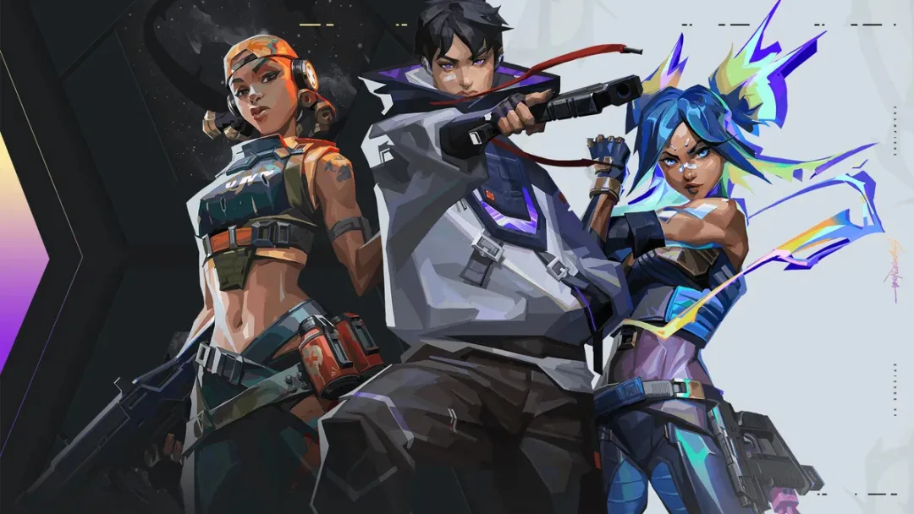

LEVEL UP YOUR GAMING SKILLSIMPROVE YOUR GAMING SKILLS NOW

LATEST UPDATE
Genshin impact is an excellent and adventure packed video game known for its attractive graphics and interesting storylines.
GENSHIN IMPACT: GETTING STARTED
Getting started in Genshin Impact can be overwhelming. There are many difficult quests to jump on, side quests to complete, treasure chests to find, & new characters to meet. For beginners, completing tasks might be more difficult than expected.
One of the main things that guarantees progress or any success in the game is doing Daily Commissions. The Daily Commissions are the daily tasks players are required to complete each day. Everyday, there are four different tasks assigned. Completing each task awards the player with 10 primogems each.
More importantly, completing all four tasks on time, accrues about 20 Primogems to the player's board. Sadly, you can't successfully get into the groove of the adventure until you reach Adventure rank 12. That's the guaranteed way you unlock Daily commissions.
While completing daily commissions help you farm Primogems, they also happen to be the greatest source for Adventure EXP and other important game currencies like Resins. It is also important to note that how fast or far you go into the game is determined by the value of EXP you collect. As far as Genshin Impact is concerned, the Adventure EXP is responsible for raising your Adventure rank fast. Basically, you get XPs from collecting Character EXP materials. This might take time and get boring especially for beginners. But playing a fun game like Genshin Impact doesn't have to end up in the boring lane.Our boosting services can help to fast track the farming routine, leveling up and even take difficult tasks off your hands.
HOW LEVELING WORKS IN GENSHIN IMPACT
Leveling up requires skill and dexterity. It requires a host of activities like slaying enemies, completing quests and collecting currencies. As a beginner, all of this could take weeks, even months to complete.
One of the guaranteed ways to level up fast is by collecting XP materials not necessarily defeating enemies. This may sound counter-intuitive especially because it's different from what you'll expect from a regular RPG(role-playing game).
Genshin Impact takes a slight turn to focus more on the player's exploration of the world of Teyvat. While defeating enemies and killing bosses surely accrues rewards, leveling up is determined by how much XP materials a player finds.
Character EXP is used to increase a player's level in the game. Players accrue more EXP and game currencies as they complete domains, defeat more enemies, kill bosses, open treasure chests, and complete more quests.
The most EXP however is usually obtained from Character Exp materials like; Wanderer’s Advice, Adventurer’s Experience, and Hero’s Wit, worth 1,000 EXP, 5,000 XP, and 20,000 EXP, respectively.
The problem for most beginners is leveling up fast sometimes requires a significant investment of time. Even though the game itself is fun, having to wait around, or repeat tasks makes it less fun.
FARMING ROUTINE
Carrying out farming activities with efficiency helps you collect huge amounts of resources swiftly. Our skilled team comes in with efficiency, and you get to relish in the fun.